{kind=link}
Signal 信号01-symbol-system/signal.svg{kind=link}
Point 关键判断01-symbol-system/key-judgment.svg{kind=link}
Trend 趋势01-symbol-system/trend.svg Opportunity 机会01-symbol-system/opportunity.svg Quote 引述01-symbol-system/quote.svg{kind=link}
{kind=link}
{kind=link}
Divider 分隔线01-symbol-system/divider.svg{kind=link}
Timeline Node 时间节点01-symbol-system/timeline-node.svg{kind=link}
Data Snapshot 数据快照01-symbol-system/data-snapshot.svg{kind=link}
Rating Chip 评级标签01-symbol-system/rating-chip.svg Source Note 来源说明01-symbol-system/source-note.svg{kind=link}
{kind=link}
Issue Number 期号编号02-information-elements/issue-number.svg{kind=link}
Date 日期02-information-elements/date-chip.svg Member Brief Tag 会员内参标签02-information-elements/member-brief-tag.svg
Reading Time 阅读时长02-information-elements/reading-time.svg
Member Brief Tag 会员内参标签02-information-elements/member-brief-tag.svg
Reading Time 阅读时长02-information-elements/reading-time.svg
{kind=link}
 Key Judgment Block 核心判断框02-information-elements/key-judgment-block.svg
Quote Block 引述框02-information-elements/quote-block.svg
Key Judgment Block 核心判断框02-information-elements/key-judgment-block.svg
Quote Block 引述框02-information-elements/quote-block.svg
{kind=link}
{kind=link}
Data Card 数据卡02-information-elements/data-card.svg{kind=link}
Trend Timeline 趋势时间线02-information-elements/trend-timeline.svg{kind=link}
Matrix Card 机会矩阵02-information-elements/opportunity-matrix.svg{kind=link}
Source Footer 数据来源脚注02-information-elements/source-footer.svg{kind=link}
Cover Page 封面页03-layout-principles/cover-page.svg Article Detail Page 正文详情页03-layout-principles/article-detail-page.svg Side Decision Rail 侧边决策栏03-layout-principles/side-decision-rail.svg{kind=link}
{kind=link}
 Brief Cover 内参封面04-application-samples/brief-cover.svg
Brief Cover 内参封面04-application-samples/brief-cover.svg
{kind=link}
Data Card Set 数据卡片组04-application-samples/data-card-set.svg{kind=link}
Report Spread 报告内页04-application-samples/report-spread.svg{kind=link}
Wave-line Drift 波纹线微动05-motion-guidelines/wave-line-drift.svg{kind=link}
Nav Underline Slide 导航下划线滑动05-motion-guidelines/nav-underline-slide.svg Button Hover 按钮悬浮反馈05-motion-guidelines/button-hover.svg{kind=link}
{kind=link}
Card Hover Lift 卡片悬浮抬升05-motion-guidelines/card-hover-lift.svg{kind=link}
Count Up 数字递增05-motion-guidelines/count-up.svg{kind=link}
Three-column Summary 三栏摘要页03-layout-principles/three-column-summary.svg{kind=link}
Report Section Header 报告章节页03-layout-principles/report-section-header.svg{kind=link}
Motion Tokens 基础动效参数05-motion-guidelines/motion-token-strip.svg Accordion Expand 手风琴展开05-motion-guidelines/accordion-expand.svg{kind=link}
{kind=link}
Modal Fade 弹窗淡入淡出05-motion-guidelines/modal-fade.svg{kind=link}
Avoid Motion 禁用动效05-motion-guidelines/avoid-motion-set.svg{kind=link}
Reading Experience 内参阅读体验05-motion-guidelines/reading-experience.svg{kind=link}
Navigation Bar 导航系统06-site-design-system/navigation-bar.svg{kind=link}
Buttons 按钮规范06-site-design-system/buttons.svg{kind=link}
Tags 标签规范06-site-design-system/tags.svg{kind=link}
Cards 卡片规范06-site-design-system/cards.svg Section Header 章节标题06-site-design-system/section-header.svg{kind=link}
{kind=link}
Search Bar 搜索框06-site-design-system/search-bar.svg Quote Block 引用框06-site-design-system/quote-block.svg Page Template Desktop 桌面页面模板06-site-design-system/page-template-desktop.svg{kind=link}
{kind=link}
{kind=link}
Page Template Mobile 移动页面模板06-site-design-system/page-template-mobile.svg{kind=link}
Data Visualization 数据图表风格06-site-design-system/data-visualization.svg